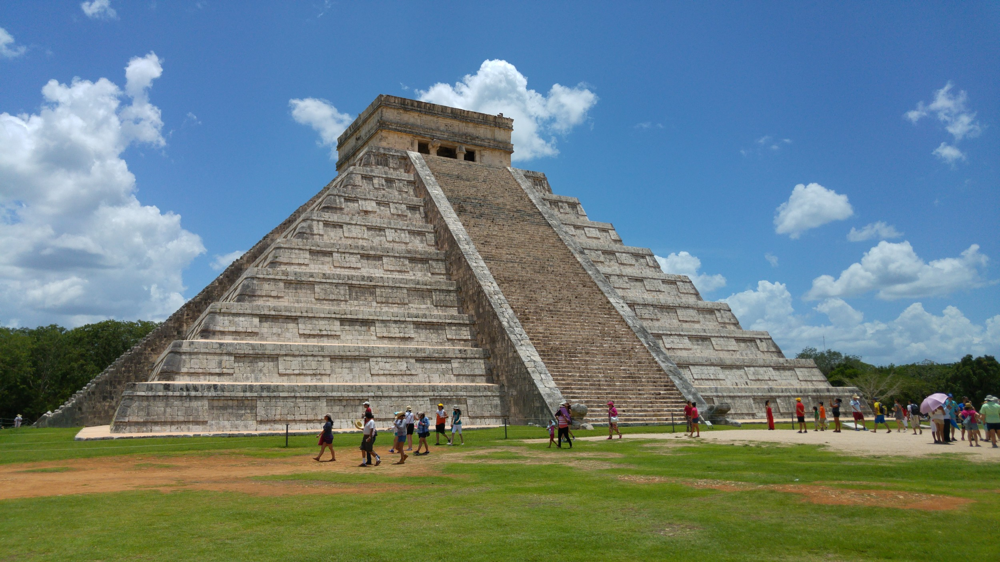
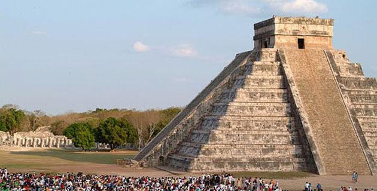

Chichen-Itza
Located in Yucatan, México, Chichen-Itza is considered one of the world's 7 wonders, and the home of the ancient Maya civilization. Located in the main square, the main pyramid of civilization is better known as "El castillo", translated into English as "The castle". This structure is 79 feet tall and has 4 sides with 91 steps. Mysteriously, when the sum of all the steps that the pyramid has is made, the result is 365, which represents the days of the solar year. Additionally, as part of the architecture throughout the pyramid, you can see the design of a feathered serpent descending the pyramid whose head ends at ground level, with its tail at the height of the main entrance of the temple, which is It is strongly projected during the dates of the equinoxes.
(Travel, 2016)
Chichen Itza Equinox
There are two ranges of dates in this ancient civilization where during the dates (from March 19th and March 23rd), and (from September 21th and September 22nd) each spring and fall of the year respectively, the length of the day and night are exactly the same with respect to both hemispheres (northern and southern). In this event hundreds of tourists from all over the world visit the pyramid to witness how the sunlight diminishes to reflect the night shadow descending the pyramid's stairs. It is said that the ancestors of civilization and even tourists today can feel their grillwork being renewed when witnessing this scene.
(Mexicodesconocido, 2022)